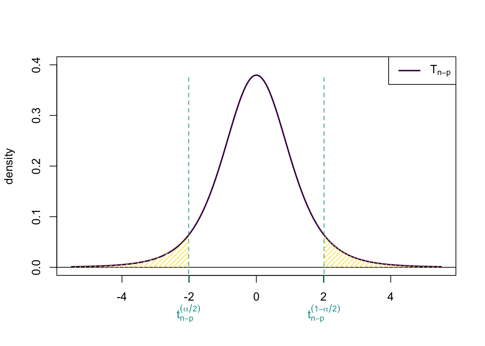
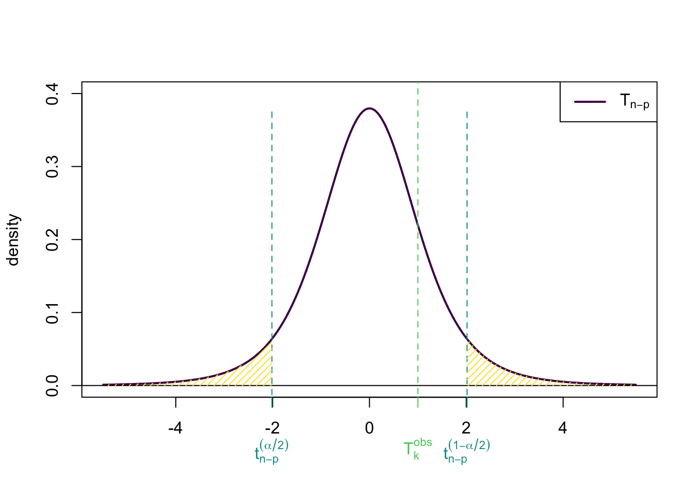
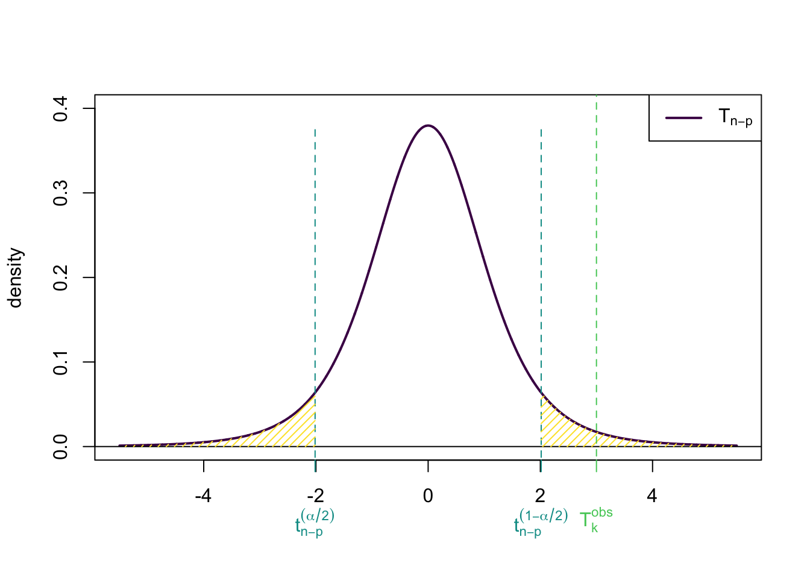
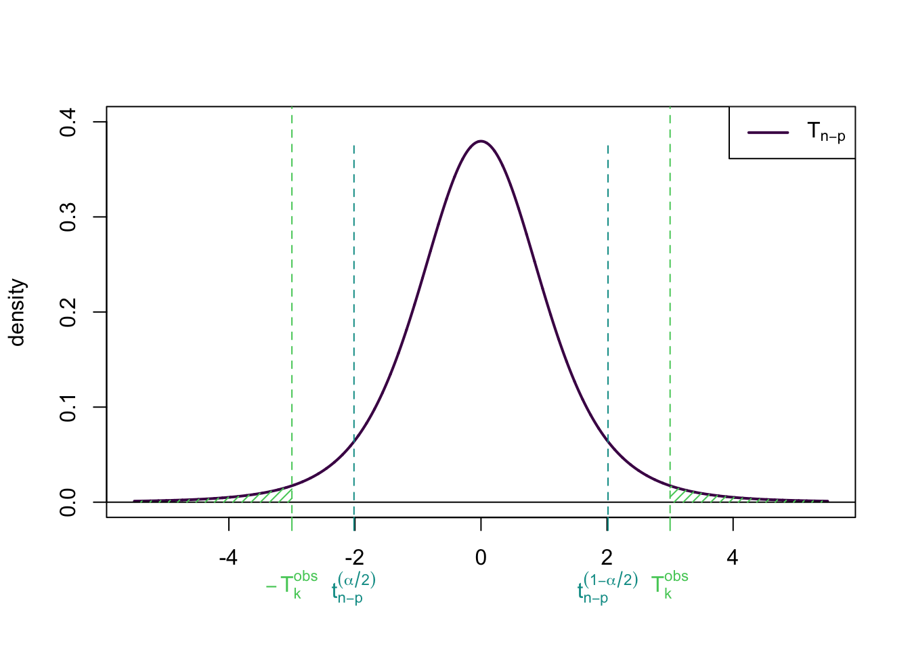

2026-11-03
\[ \mathbf{y} = \mathbf{X}\boldsymbol{\beta} + \boldsymbol{\epsilon} \]
\[ \hat{\boldsymbol{\beta}} = \underset{\boldsymbol{\beta} \in \mathbb{R}^p}{\operatorname{argmin}} \|\mathbf{y} - \mathbf{X}\boldsymbol{\beta} \|^2 \] \[ \hat{\boldsymbol{\beta}} = (\mathbf{X}^{T}\mathbf{X})^{-1}\mathbf{X}^{T}\mathbf{y} \qquad \mathbb{E}[\hat{\boldsymbol{\beta}}] = \boldsymbol{\beta} \qquad \mathbb{Var}[\hat{\boldsymbol{\beta}}] = \sigma^2 (\mathbf{X}^T\mathbf{X})^{-1}. \]
\[ \hat{\mathbf{y}} = \mathbf{X}\hat{\boldsymbol{\beta}} = \mathbf{P}^{\mathbf{X}}\mathbf{y} \qquad \hat{\boldsymbol{\epsilon}} = \mathbf{y} - \hat{\mathbf{y}} = (\mathbf{I}_n - \mathbf{P}^{\mathbf{X}})\mathbf{y} = \mathbf{P}^{\mathbf{X}^\bot}\mathbf{y} \]
\[ \mathbb{E}[\hat{\boldsymbol{\epsilon}}] = \mathbf{0} \qquad \mathbb{Var}[\hat{\boldsymbol{\epsilon}}] = \sigma^2 \mathbf{P}^{\mathbf{X}^\bot} \]
\[ \mathbb{E}[\hat{\mathbf{y}}] = \mathbf{X}\boldsymbol{\beta} \qquad \mathbb{Var}[\hat{\mathbf{y}}] = \sigma^2 \mathbf{P}^{\mathbf{X}} \]
\[ \mathbb{Cov}[\hat{\boldsymbol{\epsilon}}; \hat{\mathbf{y}}] = \mathbf{0}. \]
\[ \hat{\sigma}^2 = \frac{1}{n - p} \| \hat{\epsilon} \|^2 \qquad \mathbb{E}[\hat{\sigma}^2] = \sigma^2 \]
Confidence interval for \(\hat{\boldsymbol{\beta}}, \hat{\sigma}^2\) ?
Prediction intervals ?
Assumptions on the moments are not enough.
\(\hookrightarrow\) We need assumptions on the specific distribution of the \(\epsilon_i\).
Most common assumption: \(\epsilon_i\) are Gaussian.
\[ \mathbf{y} = \mathbf{X}\boldsymbol{\beta} + \boldsymbol{\epsilon} \]
The column and row vectors of \(\mathbf{X}\) are written as:
\[ \mathbf{X} = \begin{pmatrix} \mathbf{x}_{1} & \cdots & \mathbf{x}_{p} \end{pmatrix} = \begin{pmatrix} \mathbf{x}^{1} \\ \vdots \\ \mathbf{x}^{n} \end{pmatrix} \]
Hence: \[ y_i = \mathbf{x}^{i} \boldsymbol{\beta} + \epsilon_i \quad \forall~1\leq i \leq n \]
Model: \[ y_i = \mathbf{x}^i \boldsymbol{\beta} + \epsilon_i \quad \text{with} \quad \epsilon_i \underset{\text{iid}}{\operatorname{\sim}} \mathcal{N}(0, \sigma^2) \quad \text{for} \quad 1 \leq i \leq n \]
Distribution of \(y_i\): \[ y_i \underset{\text{iid}}{\operatorname{\sim}} \mathcal{N}(\mathbf{x}^i \boldsymbol{\beta}, \sigma^2) \quad \text{for} \quad 1 \leq i \leq n \]
and \[ \begin{aligned} L(\boldsymbol{\beta}, \sigma^2 | y_i) = \cdots \end{aligned} \]
Distribution of \(y_i\): \[ y_i \underset{\text{iid}}{\operatorname{\sim}} \mathcal{N}(\mathbf{x}^i \boldsymbol{\beta}, \sigma^2) \quad \text{for} \quad 1 \leq i \leq n \]
Likelihood of \(\mathbf{y} = (y_1, \dotsc, y_n)^T\): \[ \begin{aligned} &L(\boldsymbol{\beta}, \sigma^2 | y_1, \dotsc, y_n) = \prod_{i = 1}^n L(\boldsymbol{\beta}, \sigma^2 | y_i) & [ind.]\\ \end{aligned} \]
and
\[ L(\boldsymbol{\beta}, \sigma^2 | y_i) = \frac{1}{\sqrt{2\pi\sigma^2}}\exp\left(-\frac{(y_i - \mathbf{x}^i \boldsymbol{\beta})^2}{2\sigma^2}\right) \]
\[ \log L(\boldsymbol{\beta}, \sigma^2 | y_1, \dotsc, y_n) = - \frac{n}{2} \log(2\pi\sigma^2) - \frac{1}{2\sigma^2}\sum_{i = 1}^n (y_i - \mathbf{x}^i \boldsymbol{\beta})^2\\ \]
with: \[ \log L(\boldsymbol{\beta}, \sigma^2 | \mathbf{y}) = - \frac{n}{2} \log(2\pi\sigma^2) - \frac{1}{2\sigma^2}\sum_{i = 1}^n (y_i - \mathbf{x}^i \boldsymbol{\beta})^2 \]
\[ \log L(\boldsymbol{\beta}, \sigma^2 | \mathbf{y}) = - \frac{n}{2} \log(2\pi\sigma^2) - \frac{1}{2\sigma^2} \underbrace{\sum_{i = 1}^n (y_i - \mathbf{x}^i \boldsymbol{\beta})^2}_{\text{Sum of Squares } \|\mathbf{y} - \mathbf{X}\boldsymbol{\beta} \|^2}\\ \]
\(\hookrightarrow\) The ML estimators are the same as the OLS estimators.
\[ \begin{aligned} \hat{\sigma}^2_{ML} &= \underset{\sigma^2 \in \mathbb{R}_+^*}{\operatorname{argmax}} \log L(\hat{\boldsymbol{\beta}}, \sigma^2 | \mathbf{y})\\ &= \underset{\sigma^2 \in \mathbb{R}_+^*}{\operatorname{argmax}} - \frac{n}{2} \log(2\pi\sigma^2) - \frac{1}{2\sigma^2}\sum_{i = 1}^n (y_i - \mathbf{x}^i\hat{\boldsymbol{\beta}})^2\\ &= \underset{\sigma^2 \in \mathbb{R}_+^*}{\operatorname{argmin}} \frac{n}{2} \log(2\pi\sigma^2) + \frac{1}{2\sigma^2}\sum_{i = 1}^n \hat{\epsilon}_i^2\\ \end{aligned} \] We get:
\[ \hat{\sigma}^2_{ML} = \frac{1}{n}\sum_{i = 1}^n \hat{\epsilon}_i^2 = \frac{\|\hat{\boldsymbol{\epsilon}} \|^2}{n} = \frac{\|\mathbf{y} - \mathbf{X}\hat{\boldsymbol{\beta}} \|^2}{n} \]
\[ \hat{\sigma}^2_{ML} = \frac{\|\hat{\boldsymbol{\epsilon}} \|^2}{n} \neq \frac{\|\hat{\boldsymbol{\epsilon}} \|^2}{n-p}= \hat{\sigma}^2 \]
Let \(X\) be a Gaussian r.v. with expectation \(\mu\) and variance \(\sigma^2\): \[ X \sim \mathcal{N}(\mu, \sigma^2). \]
It admits a probability density function (pdf): \[ f(x) = \frac{1}{\sqrt{2\pi\sigma^2}}\exp\left(-\frac{(x - \mu)^2}{2\sigma^2}\right) \quad \forall x \in \mathbb{R}. \]
Moments: \[ \mathbb{E}[X] = \mu \quad \mathbb{Var}[X] = \sigma^2 \]
Let \(\mathbf{X}\) be a Gaussian vector with expectation \(\boldsymbol{\mu}\) and variance \(\mathbf{\Sigma}\): \[ \mathbf{X} \sim \mathcal{N}(\boldsymbol{\mu}, \mathbf{\Sigma}). \]
It admits a probability density function (pdf): \[ f(\mathbf{x}) = \frac{1}{\sqrt{(2\pi)^n|\mathbf{\Sigma}|}} \exp\left(-\frac{1}{2} (\mathbf{x} - \boldsymbol{\mu})^T \mathbf{\Sigma}^{-1} (\mathbf{x} - \boldsymbol{\mu})\right) \quad \forall\ \mathbf{x} \in \mathbb{R}^n. \]
Any linear combination of its coordinates is Gaussian.
Moments: \[ \mathbb{E}[\mathbf{X}] = \boldsymbol{\mu} \quad \mathbb{Var}[\mathbf{X}] = \mathbb{E}[(\mathbf{X} - \boldsymbol{\mu})(\mathbf{X} - \boldsymbol{\mu})^T] = \mathbf{\Sigma} \]
Property:
If \(\mathbf{X} \sim \mathcal{N}(\boldsymbol{\mu}, \mathbf{\Sigma})\), then for any \(\mathbf{a}\) matrix and \(\mathbf{b}\) vector,
\[
\mathbf{Y} = \mathbf{a}\mathbf{X} + \mathbf{b}
\sim \mathcal{N}(\mathbf{a}\boldsymbol{\mu} + \mathbf{b}, \mathbf{a}\mathbf{\Sigma}\mathbf{a}^T).
\]
Property:
Let \(\mathbf{X} \sim \mathcal{N}(\boldsymbol{\mu}, \mathbf{\Sigma})\), with \(\mathbf{\Sigma}\) invertible. Then \(\mathbf{\Sigma}^{-1}\) is symmetric, positive definite and it is possible to find \(\mathbf{\Sigma}^{-1/2}\) invertible such that: \[
[\mathbf{\Sigma}^{-1/2}]^T\mathbf{\Sigma}^{-1/2} = \mathbf{\Sigma}^{-1}
\] Then: \[
\mathbf{Y} = \mathbf{\Sigma}^{-1/2}(\mathbf{X} - \boldsymbol{\mu})
\sim \mathcal{N}(\mathbf{0}, \mathbf{I}).
\]
Proof:
\[
\mathbf{Y} = \mathbf{\Sigma}^{-1/2}(\mathbf{X} - \boldsymbol{\mu})
\]
Take \[ \mathbf{a} = \mathbf{\Sigma}^{-1/2} \quad \text{and} \quad \mathbf{b} = -\mathbf{\Sigma}^{-1/2}\boldsymbol{\mu} \]
Then: \[ \mathbf{a}\boldsymbol{\mu} + \mathbf{b} = \mathbf{\Sigma}^{-1/2}\boldsymbol{\mu} -\mathbf{\Sigma}^{-1/2}\boldsymbol{\mu} = \mathbf{0} \]
and: \[ \mathbf{a}\mathbf{\Sigma}\mathbf{a}^T = \mathbf{\Sigma}^{-1/2}\mathbf{\Sigma}[\mathbf{\Sigma}^{-1/2}]^T = \mathbf{I}. \]
\[ \hat{\boldsymbol{\beta}} = (\mathbf{X}^{T}\mathbf{X})^{-1}\mathbf{X}^{T}\mathbf{y} \qquad \mathbb{E}[\hat{\boldsymbol{\beta}}] = \boldsymbol{\beta} \qquad \mathbb{Var}[\hat{\boldsymbol{\beta}}] = \sigma^2 (\mathbf{X}^T\mathbf{X})^{-1}. \]
As \(\mathbf{y}\) is a Gaussian vector, \(\hat{\boldsymbol{\beta}}\) is hence also a Gaussian vector.
Hence, when the variance \(\sigma^2\) is known, we get:
\[ \hat{\boldsymbol{\beta}} \sim \mathcal{N}\left( \boldsymbol{\beta}; \sigma^2 (\mathbf{X}^T\mathbf{X})^{-1} \right). \]
Definition:
Let \(X_1, \dotsc, X_p\) be \(p\) standard normal iid r.v. : \(X_i \sim \mathcal{N}(0, 1)\). \[
X = \sum_{i = 1}^p X_i^2 \sim \chi^2_p
\]
is a Chi squared r.v. with \(p\) degrees of freedom.
Property:
Let \(\mathbf{X}\) be a Gaussian vector of size \(p\) with expectation \(\boldsymbol{\mu}\) and variance \(\mathbf{\Sigma}\): \(\mathbf{X} \sim \mathcal{N}(\boldsymbol{\mu}, \mathbf{\Sigma})\). Then, if \(\mathbf{\Sigma}\) is invertible, \[
(\mathbf{X} - \boldsymbol{\mu})^T \mathbf{\Sigma}^{-1} (\mathbf{X} - \boldsymbol{\mu})
\sim \chi^2_p
\]
is a Chi squared r.v. with \(p\) degrees of freedom.
\(\mathbf{X}\) is a Gaussian vector \(\mathbf{X} \sim \mathcal{N}(\boldsymbol{\mu}, \mathbf{\Sigma})\). with \(\mathbf{\Sigma}\) is invertible, so: \[ \mathbf{Y} = \mathbf{\Sigma}^{-1/2}(\mathbf{X} - \boldsymbol{\mu}) \sim \mathcal{N}(\mathbf{0}, \mathbf{I}_p). \]
And: \[ (\mathbf{X} - \boldsymbol{\mu})^T \mathbf{\Sigma}^{-1} (\mathbf{X} - \boldsymbol{\mu}) = \mathbf{Y}^T \mathbf{Y} = \sum_{i = 1}^p Y_i^2 \] with \(Y_1, \dotsc, Y_p\) be \(p\) standard normal iid rv.
Hence: \[ (\mathbf{X} - \boldsymbol{\mu})^T \mathbf{\Sigma}^{-1} (\mathbf{X} - \boldsymbol{\mu}) = \sum_{i = 1}^p Y_i^2 \sim \chi^2_p. \]
Theorem: Let
Then we have:
Theorem:
Hints: \[ \begin{aligned} &\text{1.} & \mathbf{X} \sim \mathcal{N}(\boldsymbol{\mu}, \mathbf{\Sigma}) \implies \mathbf{a}\mathbf{X} + \mathbf{b} \sim \mathcal{N}(\mathbf{a}\boldsymbol{\mu} + \mathbf{b}, \mathbf{a}\mathbf{\Sigma}\mathbf{a}^T).\\ &\text{2.} & \mathbf{P} = \mathbf{U}\mathbf{\Delta}\mathbf{U}^T \qquad \mathbf{U}\mathbf{U}^T = \mathbf{I}_n \qquad \mathbf{\Delta} = \begin{pmatrix} \mathbf{I}_p & \mathbf{0}\\ \mathbf{0} & \mathbf{0} \end{pmatrix}.\\ &\text{2. (bis)} & \mathbf{Z} = \mathbf{U}^T \mathbf{Y} \sim \mathcal{N}(\dotsc, \dotsc) \quad \text{and} \quad \mathbf{\Delta}\mathbf{Z} = \begin{pmatrix} \mathbf{Z}_p\\ \mathbf{0}_{n-p} \end{pmatrix} \end{aligned} \]
From the linear property of Gaussian vectors: \[ \mathbf{P}\mathbf{Y} \sim \mathcal{N}(\mathbf{P}\boldsymbol{\mu}, \mathbf{P}[\sigma^2\mathbf{I}_n]\mathbf{P}^T) \]
but: \[ \begin{aligned} \mathbf{P}[\sigma^2\mathbf{I}_n]\mathbf{P}^T & = \sigma^2 \mathbf{P}\mathbf{P}^T \\ & = \sigma^2 \mathbf{P}\mathbf{P} & [\text{orthogonal}] \\ & = \sigma^2 \mathbf{P} & [\text{projection}] \\ \end{aligned} \]
Same for \(\mathbf{P}^{\bot}\mathbf{Y}\).
As \(\mathbf{P}\) is an orthogonal projection matrix: \[ \mathbf{P} = \mathbf{U}\mathbf{\Delta}\mathbf{U}^T \qquad \mathbf{U}\mathbf{U}^T = \mathbf{I}_n \qquad \mathbf{\Delta} = \begin{pmatrix} \mathbf{I}_p & \mathbf{0}\\ \mathbf{0} & \mathbf{0} \end{pmatrix} \]
Define: \[ \mathbf{Z} = \mathbf{U}^T \mathbf{Y} \sim \mathcal{N}(\mathbf{U}^T\boldsymbol{\mu}, \mathbf{U}^T[\sigma^2\mathbf{I}_n]\mathbf{U} = \sigma^2\mathbf{I}_n). \]
Then: \[ \mathbf{\Delta}\mathbf{Z} = \begin{pmatrix} \mathbf{Z}_p\\ \mathbf{0}_{n-p} \end{pmatrix} \quad \text{independent from} \quad (\mathbf{I}_n - \mathbf{\Delta})\mathbf{Z} = \begin{pmatrix} \mathbf{0}_p\\ \mathbf{Z}_{n-p} \end{pmatrix} \]
\[ \mathbf{P} = \mathbf{U}\mathbf{\Delta}\mathbf{U}^T \qquad \mathbf{U}\mathbf{U}^T = \mathbf{I}_n \qquad \mathbf{\Delta} = \begin{pmatrix} \mathbf{I}_p & \mathbf{0}\\ \mathbf{0} & \mathbf{0} \end{pmatrix} \]
\[ \mathbf{\Delta}\mathbf{Z} = \begin{pmatrix} \mathbf{Z}_p\\ \mathbf{0}_{n-p} \end{pmatrix} \quad \text{independent from} \quad (\mathbf{I}_n - \mathbf{\Delta})\mathbf{Z} = \begin{pmatrix} \mathbf{0}_p\\ \mathbf{Z}_{n-p} \end{pmatrix} \] Lead to: \[ \mathbf{U}\mathbf{\Delta}\mathbf{Z} = \mathbf{U}\mathbf{\Delta}\mathbf{U}^T\mathbf{Y} = \mathbf{P}\mathbf{Y} \] independent from \[ \mathbf{U}(\mathbf{I}_n - \mathbf{\Delta})\mathbf{Z} = \mathbf{U}(\mathbf{I}_n - \mathbf{\Delta})\mathbf{U}^T\mathbf{Y} = \mathbf{P}^\bot\mathbf{Y}. \]
\[ \begin{aligned} \frac{1}{\sigma^2}\|\mathbf{P}(\mathbf{Y} - \boldsymbol{\mu}) \|^2 &= \frac{1}{\sigma^2}\|\mathbf{U}\mathbf{\Delta}\mathbf{U}^T(\mathbf{Y} - \boldsymbol{\mu}) \|^2 = \cdots \qquad \qquad \end{aligned} \]
\[ \begin{aligned} \frac{1}{\sigma^2}\|\mathbf{P}(\mathbf{Y} - \boldsymbol{\mu}) \|^2 &= \frac{1}{\sigma^2}[\mathbf{U}\mathbf{\Delta}\mathbf{U}^T(\mathbf{Y} - \boldsymbol{\mu})]^T[\mathbf{U}\mathbf{\Delta}\mathbf{U}^T(\mathbf{Y} - \boldsymbol{\mu})] \\ &= \frac{1}{\sigma^2}[\mathbf{\Delta}\mathbf{U}^T(\mathbf{Y} - \boldsymbol{\mu})]^T\mathbf{U}^T\mathbf{U}[\mathbf{\Delta}\mathbf{U}^T(\mathbf{Y} - \boldsymbol{\mu})] \\ &= \frac{1}{\sigma^2}(\mathbf{\Delta}\mathbf{U}^T\mathbf{Y} - \mathbf{\Delta}\mathbf{U}^T\boldsymbol{\mu})^T(\mathbf{\Delta}\mathbf{U}^T\mathbf{Y} - \mathbf{\Delta}\mathbf{U}^T\boldsymbol{\mu}) \\ \end{aligned} \]
\[ \begin{aligned} \frac{1}{\sigma^2}\|\mathbf{P}(\mathbf{Y} - \boldsymbol{\mu}) \|^2 &= \frac{1}{\sigma^2}(\mathbf{\Delta}\mathbf{U}^T\mathbf{Y} - \mathbf{\Delta}\mathbf{U}^T\boldsymbol{\mu})^T(\mathbf{\Delta}\mathbf{U}^T\mathbf{Y} - \mathbf{\Delta}\mathbf{U}^T\boldsymbol{\mu}) \\ \end{aligned} \]
But: \[ \mathbf{\Delta}\mathbf{U}^T \mathbf{Y} = \mathbf{\Delta}\mathbf{Z} = \begin{pmatrix} \mathbf{Z}_p\\ \mathbf{0}_{n-p} \end{pmatrix} \quad \text{and} \quad \mathbf{\Delta}\mathbf{U}^T\boldsymbol{\mu} = \begin{pmatrix} (\mathbf{U}^T\boldsymbol{\mu})_p\\ \mathbf{0}_{n-p} \end{pmatrix} \]
Hence: \[ \begin{aligned} \frac{1}{\sigma^2}\|\mathbf{P}(\mathbf{Y} - \boldsymbol{\mu}) \|^2 &= \frac{1}{\sigma^2}(\mathbf{Z}_p - (\mathbf{U}^T\boldsymbol{\mu})_p)^T(\mathbf{Z}_p - (\mathbf{U}^T\boldsymbol{\mu})_p) \\ \end{aligned} \]
\[ \begin{aligned} \frac{1}{\sigma^2}\|\mathbf{P}(\mathbf{Y} - \boldsymbol{\mu}) \|^2 &= \frac{1}{\sigma^2}(\mathbf{Z}_p - (\mathbf{U}^T\boldsymbol{\mu})_p)^T(\mathbf{Z}_p - (\mathbf{U}^T\boldsymbol{\mu})_p) \\ &= (\mathbf{Z}_p - (\mathbf{U}^T\boldsymbol{\mu})_p)^T[\sigma^2\mathbf{I}_p]^{-1}(\mathbf{Z}_p - (\mathbf{U}^T\boldsymbol{\mu})_p) \\ \end{aligned} \]
But: \[ \mathbf{Z} \sim \mathcal{N}(\mathbf{U}^T\boldsymbol{\mu}, \sigma^2\mathbf{I}_n) \quad \text{hence} \quad \mathbf{Z}_p \sim \mathcal{N}((\mathbf{U}^T\boldsymbol{\mu})_p, \sigma^2\mathbf{I}_p) \]
thanks to previous lemma: \[ \frac{1}{\sigma^2}\|\mathbf{P}(\mathbf{Y} - \boldsymbol{\mu}) \|^2 \sim \chi^2_{p} \]
Same for \(\frac{1}{\sigma^2}\|\mathbf{P}^\bot(\mathbf{Y} - \boldsymbol{\mu}) \|^2 \sim \chi^2_{n-p}\)
When the variance \(\sigma^2\) is known, we get:
\[ \frac{(n-p) \hat{\sigma}^2}{\sigma^2} \sim \chi^2_{n-p} \]
and
\[ \hat{\boldsymbol{\beta}} \text{ and } \hat{\sigma}^2 \text{ are independent.} \]
We have:
And:
\[ \begin{aligned} \hat{\sigma}^2 & = \frac{\|\mathbf{y} - \mathbf{X}\hat{\boldsymbol{\beta}} \|^2}{n-p} = \frac{\|\mathbf{y} - \hat{\mathbf{y}} \|^2}{n-p}\\ & = \frac{\|\mathbf{y} - \mathbf{P}^{\mathbf{X}}\mathbf{y} \|^2}{n-p} = \frac{\|\mathbf{P}^{\mathbf{X}^\bot}\mathbf{y} \|^2}{n-p}\\ \end{aligned} \]
Hence: \[ \begin{aligned} \frac{n-p}{\sigma^2}\hat{\sigma}^2 & = \frac{1}{\sigma^2}\|\mathbf{P}^{\mathbf{X}^\bot}\mathbf{y} \|^2 \end{aligned} \]
And, from Cochran’s Theorem: \[ \frac{n-p}{\sigma^2}\hat{\sigma}^2 = \frac{1}{\sigma^2}\|\mathbf{P}^{\mathbf{X}^\bot}\mathbf{y} \|^2 \sim \chi^2_{n-p}. \]
\[ \begin{aligned} \hat{\boldsymbol{\beta}} &= (\mathbf{X}^{T}\mathbf{X})^{-1}\mathbf{X}^{T}\mathbf{y}\\ &= (\mathbf{X}^{T}\mathbf{X})^{-1}(\mathbf{X}^{T}\mathbf{X})(\mathbf{X}^{T}\mathbf{X})^{-1}\mathbf{X}^{T}\mathbf{y}\\ &= (\mathbf{X}^{T}\mathbf{X})^{-1}\mathbf{X}^{T}(\mathbf{X}(\mathbf{X}^{T}\mathbf{X})^{-1}\mathbf{X}^{T})\mathbf{y}\\ &= (\mathbf{X}^{T}\mathbf{X})^{-1}\mathbf{X}^{T}\mathbf{P}^{\mathbf{X}}\mathbf{y}\\ \end{aligned} \]
and \[ \hat{\sigma}^2 = \frac{1}{n-p}\|\mathbf{P}^{\mathbf{X}^\bot}\mathbf{y} \|^2 \]
But \(\mathbf{P}^{\mathbf{X}}\mathbf{y}\) and \(\mathbf{P}^{\mathbf{X}^\bot}\mathbf{y}\) are independent from Cochran’s theorem.
Hence, \(\hat{\boldsymbol{\beta}}\) and \(\hat{\sigma}^2\) are independent.
When \(\sigma^2\) is known:
\[ \hat{\boldsymbol{\beta}} \sim \mathcal{N}\left( \boldsymbol{\beta}; \sigma^2 (\mathbf{X}^T\mathbf{X})^{-1} \right). \]
i.e. for \(1 \leq k \leq p\):
\[ \hat{\beta}_k \sim \mathcal{N}(\beta_k, \sigma^2 [(\mathbf{X}^T\mathbf{X})^{-1}]_{kk}) \]
i.e.
\[ \frac{\hat{\beta}_k - \beta_k}{\sqrt{\sigma^2 [(\mathbf{X}^T\mathbf{X})^{-1}]_{kk}}} \sim \mathcal{N}(0, 1). \]
Problem \(\sigma^2\) is generally unknown.
Solution Replace \(\sigma^2\) by \(\hat{\sigma}^2\).
When \(\sigma^2\) is unknown, for any \(1 \leq k \leq p\): \[ \frac{\hat{\beta}_k - \beta_k}{\sqrt{\hat{\sigma}^2 [(\mathbf{X}^T\mathbf{X})^{-1}]_{kk}}} \sim \mathcal{T}_{n-p}. \] Notation: \[ \hat{\sigma}^2_k = \hat{\sigma}^2_{\hat{\beta}_k} = \hat{\sigma}^2 [(\mathbf{X}^T\mathbf{X})^{-1}]_{kk} \]
Attention:
\[
[(\mathbf{X}^T\mathbf{X})^{-1}]_{kk}
\neq
[(\mathbf{X}^T\mathbf{X})_{kk}]^{-1}
\]
Then \[ T = \frac{Z}{\sqrt{X/p}} \sim \mathcal{T}_p \]
\[ \frac{\hat{\beta}_k - \beta_k}{\sqrt{\sigma^2 [(\mathbf{X}^T\mathbf{X})^{-1}]_{kk}}} \sim \mathcal{N}(0, 1) \quad \text{and} \quad \frac{(n-p) \hat{\sigma}^2}{\sigma^2} \sim \chi^2_{n-p} \]
\[ \frac{\hat{\beta}_k - \beta_k}{\sqrt{\sigma^2 [(\mathbf{X}^T\mathbf{X})^{-1}]_{kk}}} \quad \text{and} \quad \frac{(n-p) \hat{\sigma}^2}{\sigma^2} \quad \textbf{independent} \]
Hence: \[ \frac{\frac{\hat{\beta}_k - \beta_k}{\sqrt{\sigma^2 [(\mathbf{X}^T\mathbf{X})^{-1}]_{kk}}}}{ \sqrt{\frac{(n-p) \hat{\sigma}^2}{\sigma^2}/ (n-p)}} = \frac{\hat{\beta}_k - \beta_k}{\sqrt{\hat{\sigma}^2 [(\mathbf{X}^T\mathbf{X})^{-1}]_{kk}}} \sim \mathcal{T}_{n-p} \]
\[ \frac{\hat{\beta}_k - \beta_k}{\sqrt{\hat{\sigma}^2_k}} \sim \mathcal{T}_{n-p} \quad \text{and} \quad \frac{n-p}{\sigma^2}\hat{\sigma}^2 \sim \chi^2_{n-p} \]
With probability \(1-\alpha\): \[ \begin{aligned} \beta_k &\in \left[\hat{\beta}_k \pm t_{n-p}(1 - \alpha/2) \sqrt{\hat{\sigma}_k^2}\right]\\ \sigma^2 &\in \left[\frac{(n-p)\hat{\sigma}^2}{c_{n-p}(1 - \alpha/2)}; \frac{(n-p)\hat{\sigma}^2}{c_{n-p}(\alpha/2)}\right] \end{aligned} \]
\[ \text{Hypothesis:} \qquad\qquad \mathcal{H}_0: \beta_k = 0 \quad \text{vs} \quad \mathcal{H}_1: \beta_k \neq 0 \]
\[ \text{Test Statistic:} \qquad\qquad\qquad\qquad T_k = \frac{\hat{\beta}_k}{\sqrt{\hat{\sigma}^2_k}} \underset{\mathcal{H}_0}{\sim} \mathcal{T}_{n-p} \]
\[ \text{Reject Region:} \qquad\qquad\qquad\qquad\qquad\qquad\qquad\quad\\ \mathbb{P}[\text{Reject} | \mathcal{H}_0 \text{ true}] \leq \alpha \qquad\qquad\qquad\qquad\qquad\\ \qquad\qquad\qquad \iff \mathcal{R}_\alpha = \left\{ t \in \mathbb{R} ~|~ |t| \geq t_{n-p}(1 - \alpha/2) \right\} \]
\[ \text{p value:}\qquad\qquad\qquad\qquad\quad p = \mathbb{P}_{\mathcal{H}_0}[|T_k| > T_k^{obs}] \]




\[ y_i = -1 + 3 x_{i1} - x_{i2} + \epsilon_i \]
\[ y_i = -1 + 3 x_{i1} - x_{i2} + \epsilon_i \]
Call:
lm(formula = y_sim ~ x_1 + x_2)
Residuals:
Min 1Q Median 3Q Max
-2.54413 -0.71088 0.00976 0.66096 1.98562
Coefficients:
Estimate Std. Error t value Pr(>|t|)
(Intercept) -0.83037 0.19076 -4.353 3.33e-05 ***
x_1 2.87065 0.08777 32.706 < 2e-16 ***
x_2 -1.07506 0.08229 -13.064 < 2e-16 ***
---
Signif. codes: 0 '***' 0.001 '**' 0.01 '*' 0.05 '.' 0.1 ' ' 1
Residual standard error: 0.9761 on 97 degrees of freedom
Multiple R-squared: 0.9376, Adjusted R-squared: 0.9363
F-statistic: 728.9 on 2 and 97 DF, p-value: < 2.2e-16
Call:
lm(formula = y_sim ~ x_1 + x_2 + x_3)
Residuals:
Min 1Q Median 3Q Max
-2.6257 -0.7069 0.0366 0.6483 1.9548
Coefficients:
Estimate Std. Error t value Pr(>|t|)
(Intercept) -0.99755 0.25455 -3.919 0.000167 ***
x_1 2.87506 0.08789 32.711 < 2e-16 ***
x_2 -1.07733 0.08233 -13.086 < 2e-16 ***
x_3 -0.08755 0.08826 -0.992 0.323698
---
Signif. codes: 0 '***' 0.001 '**' 0.01 '*' 0.05 '.' 0.1 ' ' 1
Residual standard error: 0.9762 on 96 degrees of freedom
Multiple R-squared: 0.9382, Adjusted R-squared: 0.9363
F-statistic: 486.2 on 3 and 96 DF, p-value: < 2.2e-16We fitted \(\hat{\beta}_1, \dots, \hat{\beta}_p\) on \(((y_1, \mathbf{x}^1), \dotsc, (y_n, \mathbf{x}^n))\)
A new line of predictors \(\mathbf{x}^{n+1}\) comes along. How can we guess \(y_{n+1}\) ?
We use the same model: \[ y_{n+1} = \mathbf{x}^{n+1}\boldsymbol{\beta} + \epsilon_{n+1} \] with \(\epsilon_{n+1} \sim \mathcal{N}(0, \sigma^2)\), independent from all \((\epsilon_{i})_{1\leq i \leq n}\).
We predict \(y_{n+1}\) with: \[ \hat{y}_{n+1} = \mathbf{x}^{n+1}\hat{\boldsymbol{\beta}} \]
Question: What is the error \(\hat{\epsilon}_{n+1} = y_{n+1} - \hat{y}_{n+1}\) ?
The prediction error \(\hat{\epsilon}_{n+1} = y_{n+1} - \hat{y}_{n+1}\) is such that: \[ \hat{\epsilon}_{n+1} \sim \mathcal{N}\left( 0, \sigma^2 \left(1 + \mathbf{x}^{n+1} (\mathbf{X}^T\mathbf{X})^{-1}(\mathbf{x}^{n+1})^T\right) \right)\\ \] Proof:
Remark: \(\mathbf{x}^{n+1} (\mathbf{X}^T\mathbf{X})^{-1}(\mathbf{x}^{n+1})^T\) is a scalar.
We get: \[ \frac{y_{n+1} - \hat{y}_{n+1}}{\sqrt{\hat{\sigma}^2 \left(1 + \mathbf{x}^{n+1} (\mathbf{X}^T\mathbf{X})^{-1}(\mathbf{x}^{n+1})^T\right)}} \sim \mathcal{T}_{n-p} \]
Proof:
\[ \frac{y_{n+1} - \hat{y}_{n+1}}{\sqrt{\hat{\sigma}^2 \left(1 + \mathbf{x}^{n+1} (\mathbf{X}^T\mathbf{X})^{-1}(\mathbf{x}^{n+1})^T\right)}} = \frac{\frac{y_{n+1} - \hat{y}_{n+1}}{\sqrt{\sigma^2 \left(1 + \mathbf{x}^{n+1} (\mathbf{X}^T\mathbf{X})^{-1}(\mathbf{x}^{n+1})^T\right)}}}{ \sqrt{\frac{(n-p) \hat{\sigma}^2}{\sigma^2}/ (n-p)}} \]
With probability \(1-\alpha\): \[ y_{n+1} \in \left[\hat{y}_{n+1} \pm t_{n-p}(1 - \alpha/2) \sqrt{\hat{\sigma}^2 \left(1 + \mathbf{x}^{n+1} (\mathbf{X}^T\mathbf{X})^{-1}(\mathbf{x}^{n+1})^T\right)}\right]\\ \]
Call:
lm(formula = sales ~ TV + radio + newspaper, data = ad)
Residuals:
Min 1Q Median 3Q Max
-8.8277 -0.8908 0.2418 1.1893 2.8292
Coefficients:
Estimate Std. Error t value Pr(>|t|)
(Intercept) 2.938889 0.311908 9.422 <2e-16 ***
TV 0.045765 0.001395 32.809 <2e-16 ***
radio 0.188530 0.008611 21.893 <2e-16 ***
newspaper -0.001037 0.005871 -0.177 0.86
---
Signif. codes: 0 '***' 0.001 '**' 0.01 '*' 0.05 '.' 0.1 ' ' 1
Residual standard error: 1.686 on 196 degrees of freedom
Multiple R-squared: 0.8972, Adjusted R-squared: 0.8956
F-statistic: 570.3 on 3 and 196 DF, p-value: < 2.2e-16